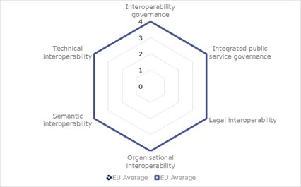
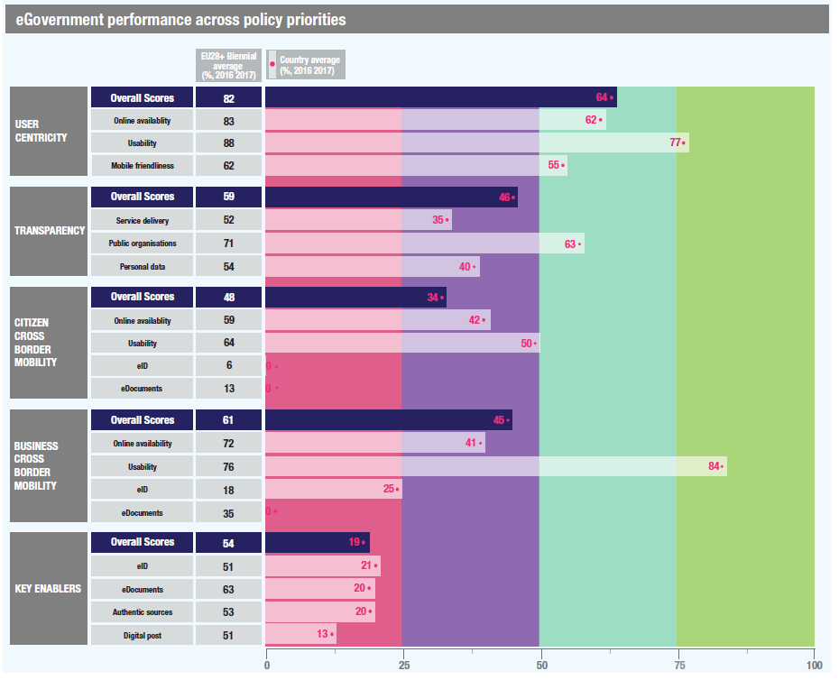
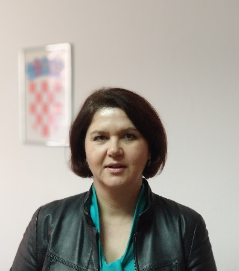
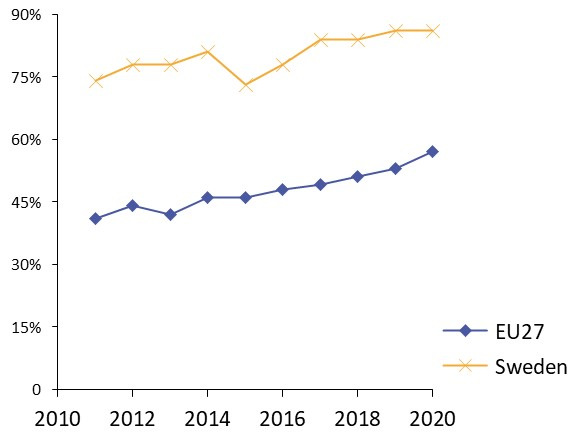
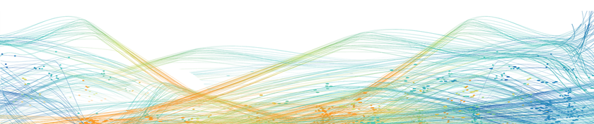

ISA2
Digital Government Factsheet 2019
Croatia
ISA2
Digital Government Highlights 6
Digital Government Political Communications 7
Digital Government Legislation 11
Digital Government Governance 16
Digital Government Infrastructure 21
Digital Government Services for Citizens 31
Digital Government Services for Businesses 48
Population: 4 105 493 inhabitants (2018)
GDP at market prices: 51 457 million Euros (2018)
GDP per inhabitant in PPS (Purchasing Power Standard EU 28=100): 65 (2017)
GDP growth rate: 2.6% (2018)
Inflation rate: 1.6% (2018)
Unemployment rate: 8.5% (2018)
General government gross debt (Percentage of GDP): 77.5% (2017)
General government deficit/surplus (Percentage of GDP): 0.9% (2017)
Area: 56 500 km²
Capital city: Zagreb
Official EU language: Croatian
Currency: Croatian Kuna HRK
Source: Eurostat (last update: 15 March 2019)
The following graphs present data for the latest Generic Information Society Indicators for Croatia compared to the EU average. Statistical indicators in this section reflect those of Eurostat at the time the Edition is being prepared.
Percentage of individuals using the internet for interacting with public authorities in Croatia | Percentage of individuals using the internet for obtaining information from public authorities in Croatia |
| |
Percentage of individuals using the internet for downloading official forms from public authorities in Croatia | Percentage of individuals using the internet for sending filled forms to public authorities in Croatia |
The graph below is the result of the latest eGovernment Benchmark report, which monitors the development of eGovernment in Europe, based on specific indicators. These indicators are clustered within four main top-level benchmarks:
User Centricity – indicates to what extent (information about) a service is provided online and how this is perceived.
Transparency – indicates to what extent governments are transparent regarding: i) their own responsibilities and performance, ii) the process of service delivery and iii) personal data involved.
Cross-Border Mobility – indicates to what extent EU citizens and businesses can use online services in another country.
Key Enablers – indicates the extent to which five technical pre-conditions are available online. There are: Identification (eID), Electronic documents (eDocuments), Authoritative Sources, and Digital Post. Digital Post refers to the possibility that governments communicate electronically-only with citizens or entrepreneurs through e.g. personal mailboxes or other digital mail solutions.
These top-level benchmarks are measured using a life-events (e.g. mystery shopping) approach. Eight life events are included in the overall eGovernment performance score. Four of these life events were measured in 2013, 2015 and 2017 and the other four were measured in 2012, 2014, 2016, and again in 2018. The life events measured in 2017 were Regular business operations, Moving, Owning and driving a car and Starting a small claims procedure. The life events measured in 2018 are Business start-up, Losing and finding a job, Family life and Studying.

Source: eGovernment Benchmark Report 2018 Country Factsheets
Digital Government Political Communications
The Strategic Plan of the Ministry of Justice for the period 2019-2021 emphasises the use of solutions based on complex algorithms and artificial intelligence in order to increase the efficiency of the proceedings.
Digital Government Legislation
Regarding cybersecurity, the Republic of Croatia has fully and successfully implemented the NIS Directive in national legislation through the Act on cyber security of operators of essential services and digital service providers on key service providers and providers of digital services.
In May 2018, the Decree on establishing the Central Electronic Registry of Development Projects was adopted (Official Gazette 42/2018), which regulates the establishment and management of the Central Electronic Registry of Development Projects which linked development projects to strategic planning documents, the obligation of entering data in the Project Registry, ownership of the Project Registry, and the types of data entered into the Project Registry.
In October 2018, the Law on electronic invoicing in public procurement (NN 94/2018) was adopted.
In February 2019, the Law on accessibility of web pages and mobile software solutions of public sector bodies was adopted (NN 17/2019).
In June 2018, the Decree on launching the e-Business project was adopted (NN 53/2018). It will enable centralised access to information about public services for businesses, secure access to business data and electronic communications of business entities and the public sector.
In August 2018, the Decree on the regulatory capital of institutions that operates with electronic money (NN 73/2018) was adopted.
The Law on eCash (NN 64/2018) was adopted in July 2018. This law regulated electronic money and electronic money issuers; conditions for establishing, operating and terminating the work of electronic money institutions established in the Republic of Croatia; and the conditions under which electronic money institutions established outside the Republic of Croatia can operate in the Republic of Croatia.
On 11 January 2018, the Croatian Parliament adopted the Decree on the establishment of the Council for National Information Infrastructure with the task of monitoring and coordinating the development of state information infrastructure.
Digital Government Infrastructure
Croatia implemented the Central Salary System (COP) in all institutions whose salaries are financed from the State budget. The COP is a web-based application covering salary calculations for the whole public administration.
Digital Government Services for Citizens and Businesses
New services adopted for citizens in 2018 included: eDetectives, eSubmission, eInsurance, Online Courses, eExchange of student grades, ePrescriptions, eHealth Record, eNewborn.
New services implemented in 2018 for businesses were: START system, eBusiness, membership to the Croatian Chamber of Architects and Digital Chamber.
The eCroatia 2020 Strategy
In May 2017, the eCroatia 2020 Strategy was adopted with its corresponding Action Plan.
The strategy was a strategic document written with the intention of improving the quality of life of the citizens of Croatia and by building the competitiveness of the economy through the stronger involvement of ICT by providing high-quality electronic public services to society. The Strategy was made in accordance with already applicable strategies and Croatian laws, professional Recommendations and Directives from the European Union, primarily from the Digital Agenda for Europe (DAE), as the first of the seven flagship initiatives within the programme of Europe 2020.
The aim was to create a coherent, logical and efficient information system of the state by providing high quality and cost-effective eServices both at national and European levels. It ensured interoperability between existing and new ICT systems in the public administration, while at the same time eliminating the duplication of their functionality. The achievement of its objectives will be measured based on the percentage of citizens and businesses using public eServices and the level of customer satisfaction.
In addition to national resources, the Strategy partly relied on European Union funds reserved for the 2014-2020 period.
The Programme of the Croatian Government for the Period 2016 – 2020
The Programme for the period 2016-2020, developed by the Government of the Republic of Croatia, represented a systematic and methodical overview of instruments the Government used to achieve political stability, legal security, economic growth and social solidarity. As part of the Programme, efforts were made to achieve a functional and accessible public administration and further digitisation. Further, for the purpose of increasing the efficiency of institutions, measures included the simplification of rules and acceleration of the work of administration through the digitisation of all processes for the purpose of expanding eServices to citizens and businesses, interconnecting all state administration bodies and establishing a uniform manner of communication between citizens and state administration bodies.
One of the Programme’s objectives relating to public administration was the accomplishment of the digitisation of public services as a specific objective. The plan involved establishing a Central Government Information System, optimisation of resources, centralised management of all information systems and services in one place, and the introduction and use of eID for all citizens.
Open Data Policy
On 19 July 2018, the Government of the Republic of Croatia adopted the Open Data Policy. The Open Data Policy provided the strategic direction for further development of the policy of openness and transparency of public administration. Its implementation seeks to create the preconditions for opening up new jobs in the context of open data economies, to make better use of EU funds in programmed projects and to increase the added value of the open data economy in the Republic of Croatia.
No political communication was adopted in this field to date.
National Strategy on Cyber Security
In 2017, the Government of the Republic of Croatia, renewed its National Cyber Security Strategy (Official Gazette 72/17). The new strategy recognised the importance of security within cyberspace as a common responsibility of all the segments of society. The main purpose of the strategy was to achieve a systematic and coordinated implementation of the activities necessary for improving Croatia’s capabilities in the area of cyber security, with a view to building a safe society in cyberspace. The goal of the strategy was to take advantage of the full market potential of information society as a whole, and especially of cyber security products and services.
Recognising the importance of security of cyberspace as a shared responsibility of all
segments of society, in October 2015 the Croatian Government adopted a Cyber Security Strategy together with an Action Plan. Its purpose was systematic and coordinated implementation of activities necessary to raise the capacity of the Republic of Croatia in the field of cybernetic security, in order to build a safe society in cyberspace. The aim of this Strategy was also the use of market potential of the information society in general and, in particular, products and cyber security services. Since it was the first comprehensive Strategy in the Republic of Croatia in the field of cybernetic security, the primary objective was to identify organisational problems in its implementation and disseminated an understanding of the importance of this issue in society. Encouraging the coordination and cooperation of all state bodies and legal persons with public authorities, but also other sectors of society, it was necessary in order to establish new functionalities, raise the efficiency of relevant stakeholders, use more existing resources effectively, planning usage needs better and realising new resources.
No political communication was adopted in this field to date.
No political communication was adopted in this field to date.
The Public Administration Development Strategy 2015 – 2020
The Public Administration Development Strategy 2015 – 2020 was adopted by the Croatian Parliament in June 2015. The Strategy presented a strategic framework for public administration development and an orientation towards enhancing administrative capacities and a better organisation of public administration. The development of a modern public administration was conducted in three main directions: the simplification and modernisation of administrative procedures to ensure the reliable and fast support of public administration to citizens and economic entities, the improvement of the development and management of human resources with the aim of creating a modern public service and reforming the administrative system to align it with European Standards.
Taking into account the need to harmonise the Action Plan with the Public Administration Development Strategy 2015 – 2020, the Government Programme 2016 – 2020 and the prerequisites for the fulfilment of ex ante conditionalities, the Croatian Government adopted The Action Plan for the implementation of the Public Administration Development Strategy 2017 – 2020 in December 2016.
National Health Care Strategy 2012 - 2020
National Health Care Strategy 2012-2020 is the umbrella document determining the context, vision, priorities, goals and key measures in health care in the Republic of Croatia in the period. The time horizon until 2020 was selected because it provides sufficient time for implementation and evaluation of the strategic measures, and it coincides with key strategic documents of the European Union (EU) and World Health Organisation (WHO).
Part of this strategy focuses on the Informatisation and eHealth within the Central Health Care Information System in Croatia (CEZIH). CEZIH, with more than 17,000 users and a large number of information systems makes a good basis for informatisation of the entire health care system in Croatia. On 2 January 2011, ePrescription was introduced and complete national coverage was achieved, which was a significant step towards achieving a “paperless office”. On 15 January 2011, full national coverage of eReferral was achieved for biochemical laboratories, and since then millions of electronic referrals and results of laboratory examinations have been exchanged in the system. Another effect of modernisation was the increase in information technology literacy among health care workers. Overall there were five key purposes of the informatisation of the health care in Croatia:
To contribute directly to the improvement of health care service quality, safety and consistency.
To provide better communication between all participants in the health care through central management of patients’ data, in primary, secondary and tertiary care (electronic medical record), centralised managing of processes in the health care system (e.g. eAppointment) and connecting all health care registers.
To achieve complete availability of the health care to patients through quick and secure access to their own health record, as well as to information on health services and the quality of health care.
To enhance administration efficiency and improve the management of the health care system by building an advanced reporting system, including all data in the health care system. This would support health care authorities and decision makers and allow for a more efficient spending of resources.
To align the health system with the political goals of digitalisation of the public sector and provision of electronic services to the population, in coordination with other state administration bodies and in accordance with the strategy of the Republic of Croatia and eCroatia.
eJustice
Strengthening the efficiency of the judiciary was one of the objectives in the Strategic Plan of the Ministry of Justice for the period 2019-2021, emphasising the use of solutions based on complex algorithms and artificial intelligence in order to increase the efficiency of the proceedings. Also, electronic communication in courts is advancing and currently all commercial courts are now equipped for eCommunication with lawyers, notaries and prosecutors. Online payment of Court fees is incentivised by offering a 50 % discount in case of immediate payment and online submission of a claim. As of 2019, personal and corporate insolvency documents should be delivered from the Financial Agency to the courts electronically. A pilot project is testing the central postal delivery of court documents.
eSchool: Establishment of the Digital Maturity Schools Development Programme (pilot project)
As part of a new curriculum in 2018, obligatory ICT classes were introduced in the 5th and 6th grades of primary school. eSchool: Establishment of the Digital Maturity Schools Development Program (pilot project), was a successful pilot project in the Republic of Croatia in the field of eEducation which was completed in August 2018. Through the pilot project, the schools are equipped with LAN, digital classrooms and tablets. Digital educational content and drafts for STEM subjects were made for primary schools and high schools. eServices of digital educational content repositories, education organisation applications, classroom management system, and an IT system for computerisation of the business of the institution were created. The framework for digital maturity of schools and the digital competence of principals, teachers and professional associates were developed. Due to the success of the first phase of the "eSchool" project, the second phase of the project is being rolled out for the remaining schools in 2019. Through the advancement, transparency and linking the operations of business and teaching processes in schools, the necessary preconditions for the use of ICT were created.
The eCroatia 2020 Strategy
The Croatian Interoperability Framework was developed in accordance with the European Interoperability Framework 1.0, i.e. in line with the version EIF 1.0, and in its subsequent development. In all its actions, account will be taken of the principles of the European Interoperability Framework. Special attention will be paid to the political context as well as legal, organisational, semantic and technical interoperability.
The eCroatia 2020 Strategy also focuses on the insurance of interoperability between the current and the new ICT systems in public administration, including the elimination of duplicated functionalities. The process of informatisation in the Republic of Croatia has so far been characterised by partial solutions, which met the needs of various domains of public administration, without interoperability of the whole system, which has negative consequences on the provision of eServices. For this reason, the adoption of the Law on State Information Infrastructure, the Strategy of e-Croatia 2020 and the related Action Plan, first established the legislative framework, and subsequently the objectives of the new electronic administration activities. Priority was given to customer satisfaction, rationalisation of administrative procedures and the preparation and provision of modern eServices in order to improve the quality of life of citizens and the consequent further growth of the Croatian economy. Such integrated informatisation supports the implementation of an optimal state model by creating and developing new public services as well as enabling citizens, entrepreneurs and the public administration to access electronic services as useful, simple, accessible and secure tools, compatible with different technologies.
The National Information Infrastructure Act is the basis for interoperability, implementing the eCitizens system as a one-stop-shop for eServices in the virtual world, and a portal providing access to public sector information.
Statement on Cooperation for Artificial Intelligence
In July 2018, Minister of Economy, Entrepreneurship and Crafts signed a Statement on Cooperation in the field of artificial intelligence. In this way, the Republic of Croatia committed itself to cooperating on a comprehensive and integrated European approach to artificial intelligence and agreed to promote European technology and industrial capacity in artificial intelligence, including better access to public sector information.
Law on the State Information Infrastructure
On 15 July 2014, the Croatian Parliament adopted the Law on the State Information Infrastructure. The Act established a central government portal system as a single point of contact in the virtual world. The Act also introduced the communication of public sector institutions with citizens via a state issued mailbox, a national identification and authentication system, a system of basic and public registers, a public register for the coordination of projects established for State Information Infrastructure (ProDII) and a meta-register with all information needed for their interconnection thus ensuring preconditions for the 'Paperless government' project. The Law also defined the body responsible for the development and implementation of ICT in the public sector and instruments for coordination.
Croatia has a comprehensive framework of laws and regulations in place for exercising eGovernance which is supplemented by the Electronic Document Act (OG 150/2005), the Information Security and Confidentiality Act (NN 79/2007), the Act on the Right to Access Information (NN 172/03) and the implementation of the Convention on Cybercrime (OG 173/2003).
Act on the Right of Access to Information (NN 25/13; 85/15)
Due to the change in the Croatian Constitution in 2010 (Official Gazette 76/2010), the right of access to information became part of the catalogue of citizens’ constitutional rights. The right of access to information is governed by the Act on the Right of Access to Information (Official Gazette 25/2013, 85/2015). The Act transposed the EU Directive on the re-use of public sector information 2003/98/EC, 2013/37/EU, and it also regulates the re-use of such information. The Act on the Right of Access to Information regulated the right of access to information and re-use of information held by public authorities, laid down the principles of the right of access to information and to the re-use of information, the restrictions on the right of access to information and the re-use of information, the procedure for the exercise of rights of access to information and the re-use of information, the scope, mode and conditions for the appointment and dismissal of the Information Commissioner; the inspection of the implementation of this Act; the misdemeanour provisions related to the exercise of the right of access to information and regulate public authorities’ other obligations.
The Act was amended in 2015 (OG 85/18), thus extending the obligation to publish open data as well as providing information on reuse. According to the Act on the Right to Access Information and in accordance with the PSI Directive, public authorities should not restrict the reuse of their data sets, and the terms of use should be minimal.
Re-use of Public Sector Information (PSI)
The obligation to provide data for reuse and to open data is regulated by the Law on the Right of Access to Information (Official Gazette 25/14, 85/15) which transposed the PSI Directive. The Law included emphasis on proactive publishing of information by public bodies, including clear legal requirements of what must be published and additional by-laws on implementation, and enabled reuse of information, with marginal costs, for any purpose (non-commercial and commercial). Also, the information was available on request. According to the amended Law which came into force in August 2015, public sector bodies must make their documents available (where possible and appropriate) in open and machine-readable format together with their metadata. Croatia’s Open Data Portal was launched in March 2015.
eIDAS
In July 2017, the Law of Regulation (EU) No. 910/2014 of the European Parliament and of the Council of 23 July 2014 on electronic identification and trust services for electronic transactions in the internal market and repealing Council Directive 1999/93/EC was adopted.
The eIDAS Regulation of the European Parliament and the Council 910/2014 on electronic identification and trust services for electronic transactions in the internal market was released, in order to enhance trust in electronic transactions in the internal market by providing a common foundation for secure electronic interaction between citizens, businesses and public authorities, simpler and more secure transactions and mutual recognition of electronic identification.
The decree on providing and using trust services is currently in the process of publication. The decree will further regulate: the measures, procedures and forms of protection of electronic trust services; other authentication methods that provide security as equivalent to physical presence (such as video-identification), by which the provider of trust services checks the signatory's identity, prerequisites and rules for automated remote electronic signing and stamping; general and special terms of management for trust services provider;, rules on temporary suspension of electronic signature certificates and electronic seal certificates in cases when the certificate temporarily loses its validity; compulsory insurance of trust service providers, etc. The body in charge is the Ministry of Economy, Entrepreneurship and Crafts.
Electronic Signature Act (NN 10/02 / NN 80/08 / NN 30/14)
Croatia was one of the first countries to include digital signatures in its legislation. The Electronic Signature Act (NN 62/17) (Law NN 10/02, amended by Law NN 80/08 and Law NN 30/14) has been supplemented by a series of ordinances and regulations, such as the Regulation on the scope of operations, content and responsible authority for operations of electronic signature certification for State Administration bodies (NN 146/04).
Act on Cyber Security of Operators of Essential Services and Digital Service Providers
Croatia fully and successfully implemented the NIS Directive in national legislation through the Act on Cyber Security of Operators of Essential Services and Digital Service Providers (NN 64/2018), adopted in July 2018. The associated Decree on cybersecurity of key service providers and providers of digital services (NN 68/2018) was adopted parallelly.
The body that acts as the contact point for the implementation of the law is the Office of the National Security Council, and the body responsible for digital service providers is the Ministry of Economy, Entrepreneurship and Crafts.
Personal Data Protection Act (NN 106/12)
The Personal Data Protection Act was adopted in June 2003, implementing the relevant EU Directive (95/46/EC). It foresaw that personal data may be transferred cross-border and processed in another jurisdiction, to the extent that this jurisdiction can ensure an adequate level of protection. The law was amended once on 20 October 2006 (NN 118/06), while the last amendment took place on 3 April 2008 (NN 41/08).
Decree on the Establishment of the Public Register for Coordination of Projects on the State Information Infrastructure
On 13 November 2014, the Croatian Government adopted the Decree on the Establishment of the Public Register for Coordination of Projects on the State Information Infrastructure (ProDII Register). The Decree was set up with the purpose of rationalisation, development direction and coordination of all activities and projects on the state information infrastructure, simultaneously increasing the quality of public services as well as disabling future planning and implementation of the same or similar projects in the public sector.
Central Electronic Registry
In May 2018, the Decree on Establishing the Central Electronic Registry of Development Projects was adopted, the Official Gazette 42/2018, which regulated establishment and management of the Central Electronic Registry of Development Projects, the way of linking development projects to strategic planning documents, the obligation of entering data in the Project Registry, ownership of the Project Registry and the types of data that are entered in the Project Registry.
Business Registry
For the Business Registry (Court Register), the Court Register Act (001/1995) regulated the establishment, structure, and maintenance of the register. The Court Register Act also defined the procedure of registration matters. The decision on the means and conditions for Access to Court Register (138/2002) determined the access to the data recorded in the Court Register via the Internet. The Ordinance on entry in the court register (022/2012) prescribed various aspects, such as the form, the method of registering data, the insurance and storage of registry data, the content and the form of the application for registration, the content of other prescribed forms and codes, as well as other issues relevant to the register and the use of information technology.
Amendments to the Court Register Act were published in Official Gazette 40/2019.
Land Registry
For the Land Registry, the Law on State Survey and Real Estate Cadastre (16/07) which regulated the state survey, real estate cadastre, spatial unit, National Spatial Data Infrastructure, jobs in local government, geodetic works for special purposes, and jurisdiction over the state survey and real estate cadastre.
Civil Registry
For the Civil Registry, the Regulation on Keeping Records and the Form of Personal Data (105/04) prescribes the way of keeping records of personal data, stored by state authorities, local and regional governments, the natural and legal persons who process personal data, and the form of such records.
Public Procurement Act (NN 110/07 / NN 125/08, 120/16)
The Public Procurement Act (NN 110/07) and accompanying regulations and ordinances (NN 125/08), regulated the conditions of and procedures for public procurement which preceded the conclusion of contracts on the procurement of goods and services and the contracting of works with the objective of securing the effective budget utilisation and encouraging a free market for tendering.
eInvoicing Legislation
In 2015, the Croatian Ministry of Economy, Entrepreneurship and Crafts participated in a CEF-funded project: the Croatian eInvoicing Business-to-Administration Exchange Project. Its objective was to promote and accelerate the uptake of eInvoicing in Croatia amongst public and private entities, and by improving the existing invoicing technical and operational environment. The Ministry finalised the implementation of the project in May 2017.
From 28 February 2016 onwards, Decision 124/2015 mandated the reception and processing of electronic invoices (eInvoices) for all central contracting authorities and entities. In Croatia, economic operators submitted eInvoices to the central contracting authorities via the central government platform e-Račun. This platform worked as the national eInvoicing exchange hub to which all economic operators must connect.
It was not mandatory to establish bilateral contractual relations or agreements between all parties in the system: a simple registration was sufficient to exchange eInvoices with other registered users.
Based on a Public Key Infrastructure (PKI), e-Račun used digital certificates and ensured that every user had a registered identity and that sensitive information was encrypted.
The issuance and exchange of eInvoices in Croatia is governed by the following national laws and regulations which reflect EU legislation: Value Added Tax Act (NN 73/13, 99/13, RUS, 148/13, 143/14, 115/16), Ordinance on value added tax (NN 79/13, 85/13, 160/13, 35/14, 157/14, 130/15/1/17, 41/17), General Tax Code (NN 115/16), Act on the Accounting (NN 78/15, 134/15, 120/16), Electronic Document Act (NN 150/05), eIDAS Regulation 910/2014 (directly applicable in all Member States), Implementation Act on eIDAS Regulation EU/910/2014 (NN 62/17), Electronic Commerce Act (NN 173/03, 67/08, 36/09, 130/11, 30/14).
eInvoicing in Public Procurement
In October 2018, the Law on Electronic Invoicing in Public Procurement (NN 94/2018) was adopted.
Accessibility of web pages
In February 2019, the Law on Accessibility of Web Pages and Mobile Software Solutions of Public Sector Bodies was adopted (NN 17/2019).
eBusiness
In June 2018, the Decree on launching the e-Business project was adopted (NN 53/2018). It enabled centralised access to information about public services for businesses, secure access to business data and electronic communications of business entities and the public sector.
eCash
The Law on eCash (NN 64/2018) was adopted in July 2018. It regulated electronic money and electronic money issuers, conditions for establishing, operating and terminating the work of electronic money institutions established in the Republic of Croatia, and the conditions under which electronic money institutions established outside the Republic of Croatia can operate in the Republic of Croatia.
eMoney
In August 2018, the Decree on the regulatory capital of the institutions that operates with electronic money (NN 73/2018) was adopted.
Establishing a business
In November, the Decree on conditions, methods and terms for establishing a system for starting a business – START, was adopted (NN 103/2018).
Law on Electronic Commerce (NN 173/03, 67/08, 36/09, 130/11, 30/14)
The Law on Electronic Commerce regulated the provision of information society services, IT services providers' liability and laid down the rules concerning the conclusion of contracts in electronic form. Its provisions did not apply to data protection, taxation, and notary activity, representing clients and protecting their interests before the courts.
The law was first adopted on 15 October 2003 (NN 173/03) and amended on 20 May 2008 (NN 67/08), while its last version was voted on 13 March 2009 (NN 36/09).
Regulation on eCommunication
In February 2018, the Regulation on the electronic communication in proceedings with commercial courts was adopted (NN 12/2018).
Single Digital Gateway
The European Parliament and the Council adopted the Regulation on the establishment of a Single Digital Gateway as a source of Information, procedures and support services. Its implementation officially started on 11 December 2018. The Central State Office for the Development of the Digital Society and the Ministry of the Economy, Entrepreneurship and Crafts was designated to carry out horizontal coordination of implementation in cooperation with all relevant bodies for the particular administrative areas and public policies necessary for the development of the Single Digital Gateway.
Decree on Organisational and Technical Standards for Connecting to the National Information Infrastructure
In July 2017, the new Decree on Organisational and Technical Standards for Connecting to the National Information Infrastructure (OG 60/2017) was adopted.
The Decree laid down organisational and technical standards for linking the state information infrastructure, conditions and activities necessary for the launch, implementation, development and supervision of projects related to the state information infrastructure, management, development and other elements necessary for the operation of the state information infrastructure.
It stipulated the organisational and technical standards, policies and activities necessary for the implementation, development and monitoring of projects related to the national information infrastructure, as well as the management, development of other elements necessary for the operation of the state information infrastructure.
No legislation was adopted in this field to date.
Ministry of Public Administration
The Ministry of Public Administration is responsible for the harmonisation of the national policy on information society development and the promotion of the use of common interoperable solutions in collaboration with other countries at the European level. It participates in the preparation of normative and expert frameworks ahead of EU accession as far as the information society and media are concerned.
Mr. Lovro Kuščević Minister of Public Administration
Contact details: Maksimirska 63 HR-10 000, Zagreb E-mail: kabinet@uprava.hr Tel.: +385 1 235 7500 Source: https://vlada.gov.hr/ |
 | Mrs. Zrinka Bulić Assistant Minister of Public Administration
Contact details: Maksimirska 63 HR-10 000, Zagreb E-mail: e-hrvatska@uprava.hr Tel.: +385 1 235 7543 Source: https://uprava.gov.hr/ |
Central State Office for the Development of the Digital Society
The new Central State Office for the Development of the Digital Society will perform administrative and professional tasks related to the development, standardisation, and security recommendations for the use of state IT infrastructure and participate in the promotion and systemic improvement of network infrastructure in the Republic of Croatia. The body is also mandated to propose a strategy to the government aimed at improving digital literacy in Croatia.
 | Mr. Bernard Gršić State Secretary of the State Office for the Development of the Digital Society
Contact details: Ivana Lučića 8 HR-10 000, Zagreb E-mail: ured@rdd.hr Tel.: +385 1 4400 840 Source: https://rdd.gov.hr/ |
The Council for National Information Infrastructure
In June 2015, the Council for National Information Infrastructure was founded. The Council is composed of representatives of central state administration bodies and professional ICT community. The Council has the task of monitoring and coordinating the development of state information infrastructure, supervising compliance projects in the ProDII Register with the Law on Public Information Infrastructure and acts of planning, coordinating projects of state information infrastructure and making recommendations on the merger of the same projects entered in the ProDII Register. The Council also assesses goals and possibilities of development of state information infrastructure and the achieved quality and availability of information services.
Activities include giving recommendations to the Government of the Republic of Croatia on proposals for strategy, plans, implementing and other acts on the topic of state information infrastructure and digital society. Also, the Council’s activities cover monitoring of the operations of the Shared Services Centre, the evaluation of the goals and possibilities of development of the state information infrastructure, and providing guidelines for the future development of the state information infrastructure. Expert, administrative and organisational support to the Council is the task of the Central State Office for the development of digital society. The Council encourages research and development in the field of information technology in the public sector and make recommendations for the future development of the state information infrastructure, with particular emphasis on its security.
Ministry of Public Administration
The Ministry performs administrative tasks related to the coordination of public administration body information systems. It coordinates the scientific development of State Administration, as well as the direction of its reform and modernisation process. Furthermore, it directs the eCroatia Programme.
Central State Office for the Development of the Digital Society
This new Office will perform administrative and professional tasks related to the development, standardisation, and safety recommendations for the use of state IT infrastructure and participate in the promotion and systemic improvement of network infrastructure in the Republic of Croatia. The Office is also in charge of making and monitoring the implementation of laws and other regulations in the field of ICT in the Republic of Croatia as well as defining activities and the methodology for the monitoring progress and impact assessment of policies linked to the development of a digital society in Croatia.
Ministry of Public Administration
The Ministry monitors the implementation of laws and regulations in the field of ICT, ICT in public administration and new technologies in support of administrative procedures in public administration facilities. Moreover, it is responsible for driving the implementation of the eCroatia Programme.
Ministry of the Sea, Transport and Infrastructure
The Ministry performs administrative services and other professional actions related to the field of electronic communications representing the basic information-communication infrastructure.
Agency for the Protection of Personal Data
The Bureau is the central government body tasked with implementing the technical aspects of information security for government bodies. Technical areas include the following: standards for information systems' security; security accreditation of information systems; management of crypto-material used in the exchange of classified information; and prevention and response to computer threats.
Ministry of Public Administration
The Ministry participates in the overall promotion and improvement of IT infrastructure in Croatia. Furthermore, it promotes the building of the information society, the public's access to Internet services and facilities, the development of ICT, eGovernment, eEducation and eBusiness.
Croatian Bureau of Statistics (CBS)
CBS provides statistical data on economic, demographic, social, health and ecological conditions, activities and events. In addition, it fulfils the international commitments of Croatia related to production and dissemination of official statistics.
Information Systems and Information Technology Support Agency (APIS IT)
The Agency has developed a document management information system to support the ongoing activities of the State Administration and local government institutions. APIS IT also supports the State administration portal.
Financial Agency (FINA)
FINA is a Government-owned company competent for financial transactions. It streamlines the information-communication infrastructure, supports the State and public finances systems, as well as the registers and information services of administration, regional and local self-government bodies. FINA was entrusted with the development of IT-Communication Network of State Administration Bodies (HITRO.HR).
National Council for Information Society, Ministry of Science and Education
The National Council for Information Society advises the Government on issues relating to the development of the information society as a whole.
Central State Office for the Development of the Digital Society
The former Digital Information-Documentation Office was integrated in December 2016 within the Central State Office for the Development of the Digital Society as an expert government service which performs information, documentation and referral work. In addition, it promotes the use of official public domain data, information and documentation and ensures the use of additional information, data and documentation relevant to state bodies and institutions.
Council for State Information Infrastructure
The Council was established in May 2016. Its main activities include monitoring the implementation of all projects of the State Information Infrastructure (ProDII) and making recommendations for the implementation of investment in IT infrastructure in the central state administration bodies and other budget beneficiaries of the state budget and extra-budgetary users of the state budget. All investments in ICT exceeding the value of 2.5 mil HRK have to be approved by the Council.
Ministry for Regional Development and EU funds
The Ministry is in charge of preparing primary and secondary legislation which regulates administrative procedures. Furthermore, it seeks to improve the legal and procedural framework towards fulfilling the requirements of eGovernment and electronic communication in line with EU regulations.
AKD
AKD is a company specialising in the production of documents, smart cards and high-security printed matter as well as the implementation of support IT infrastructure and integral solutions. AKD also provides share services including identification of citizens, according to the Decree on organisational and technical standards for connection to state information infrastructure. AKD manufactures an array of products falling into three principal brands:
AKD Documents;
AKD Cards & eSolutions;
AKD Security Printing.
CARNet
Croatian Academic and Research Network (CARNet) is a public institution that today operates under the Ministry of Science and Education in the field of information and communication technologies and its application in education from network and Internet infrastructure through eServices, to security and user support. CARNet also provides share services according to the Decree on organisational and technical standards for connection to state information infrastructure.
Information Systems and Information Technology Support Agency (APIS IT LLC)
In the creation of the information environment in Republic of Croatia, the role of APIS IT is to develop and monitor the implementation of the directives, norms and policies in e-Government, to give support to the public administration in development of its own IT strategies, to develop and support common ICT infrastructure, to promote the best practices in developing information systems, including the protection of the personal data and use of shared services and access to the information resources of the government administration with corresponding authorization and authentication.
Metaregistry
For the Metaregistry, the department for e-Croatia in the Ministry of Public Administration is the central government body in charge. The main base registries in Croatia are the ones holding information on persons, companies, and land. Currently, Croatia does not have a complete catalogue of base registries. Croatia does, however, have an extensive list of public registries which is available through the Metaregistry. The administration of base registries is handled by different public bodies in Croatia.
The State Audit Office is the supreme audit institution of Croatia whose authorities and responsibilities lie within the scope of the State Audit Act.
Agency for the Protection of Personal Data
The Croatian Personal Data Protection Agency carries out administrative and professional tasks regarding personal data protection. More specifically, it supervises the implementation of personal data laws and regulations, highlights perceived misuse of personal data, decides on the course of action to be taken in case of violation of personal data laws and centrally registers all the Croatian territory’s official personal data.
No responsible organisations were reported to date.
No responsible organisations were reported to date.
No responsible organisations were reported to date.
No responsible organisations were reported to date.
No responsible organisations were reported to date.
No responsible organisations were reported to date.
No responsible organisations were reported to date.
Central Salary Calculation System
Croatia implemented the Central Salary System (COP) in all institutions that have salaries financed from the State budget. COP is a web-based application covering salary calculations for the whole public administration. The system gives the Government of Croatia the possibility to manage the system. It also provides exact data to the Government of salaries paid by all elements.
The system of centralized salary calculation (COP) became fully operational in 2018 with 2 122 registered institutions of COP beneficiaries on 31 December 2018. It covers 248 918 employees, who are paid by the state budget through the COP system.
In 2018, the following functionalities were introduced in COP:
- Education System - the Official Gazette published the Collective Agreement for Employees in Primary Institutions (NN 51/2018) and the Collective Agreement for Employees in Secondary Schools (NN 51/2018), which apply from 1 May 2018.
- Social Welfare System: a new Collective Agreement for Social Welfare was signed. The Employer Agreement became applicable, effective from 1 June 2018.
- Culture System: a new Collective Agreement on Employers in Culture Institutions financed from the State Budget (NN 46/2018) was published in the Official Gazette, which entered into force on the day of signature, 27 April 2018.
- System of Science and Higher Education: the new Collective Agreement on Science and Higher Education (NN 9/2019) was published in the Official Gazette, which entered into force on 27 December 2018.
eCitizen portal
On 10 June 2014 the eCitizen platform was launched, where today 54 e-services are available to citizens. Bodies and institutions can send to the Personal User Boxes (OKPs) 66 kinds of personalised emails with various information and notices, such as information about expiration of personal documents, individual documents and status of individual proceedings. The platform represented a one-stop-shop in the virtual world. It consisted of a central state portal, a National Identification and Authentication System (NIAS) and a government-issued personal mailbox dedicated to the communication of the government with the citizens. Through that platform, the eServices that were incorporated into the eCitizen system of 28 public sector bodies could be reached, while the identification and authentication was performed only once. NIAS functionalities were in line with the STORK project of the EU, ensuring authentication levels from one to four depending on the security level needed by the application.
New electronic services implemented in the eCitizens system during 2018 were: eNewborn, eSubmission of MZO, online courses, eExchanges of Student Assessment, SKDD eInvestor, eInsurance of workers' claims, eDetectives, eAgriculture and procedures related to the membership of the Croatian Chamber of Architects.
By setting up the eCitizens System, a major step was taken to modernise public services and to bring public administration closer to citizens.
Since the beginning of its operation until 31 December 2018, there were 648 414 users who used at least one eService, and as many as 19 436 384 million logins on available eServices. In 2018, 119 052 Personal User Boxes were opened and 1 173 446 messages were received during the same period.
State Administration Portal
The State Administration Portal 'Central State portal' (My eGovernment Portal) was abolished after the introduction of the eCitizen portal. Prior to this, it represented an innovative development in terms of administration information usage and availability. It connected citizens and companies with administration and making information available in one place and in a user-friendly manner. The portal provided information on Government services intended for citizens and entrepreneurs. By providing access to all eGovernment services, it continued to evolve into a single point of contact between the Government and citizens.
The portal remained in the first phase of its development in terms of building a unified synergy platform to integrate the overall Croatian public government system.
Pursuant to the Regulation on Organisation and Technical Standards for Connecting to the State Information Infrastructure (OG 60/2017), the Office of the Prime Minister of the Republic of Croatia coordinated the inclusion of the website of the public sector body into the system of the central state portal gov.hr and delivered the Plan of Integration of the Internet Sites. During 2018 activities were carried out to move central government bodies to the Central State Portal using a common content management system on the web pages (GOV.hr). Currently there are 16 ministries and state bodies that uses the GOV.hr platform. Also, the GOV.hr system is used by all Government Offices.
HITRO.HR portal
HITRO.HR portal is a service provided by the Government to facilitate rapid communication between citizens and businesses with the State administration. There are currently 624 locations of public bodies in HITROnet infrastructure. This eService infrastructure serves as a one-stop-shop, as it enables citizens and businesses to enjoy quicker and simpler access to information and services in one location. Furthermore, it aims to improve service levels by increasing the speed, efficiency, flexibility and transparency of State administration.
Through the use of smart cards and digital signatures, citizens have access to the following services:
'How to start a limited liability company'; 'How to start a craft business': entrepreneurs are able to carry out online the process of business creation.
eREGOS (Central Registry of Insured Persons): registered users are able to submit electronically the R-Sm form (the insured person’s specification based on calculated and paid compulsory contributions for pension fund insurance).
eTax: taxpayers (legal and natural entities) are able to electronically submit tax returns and forms.
eVAT: citizens are able to perform VAT payments online.
ePension: employers and taxpayers (legal and natural entities) are able to register online for pension insurance.
In addition to locations connected via HITROnet, some sites of public law bodies are connected to the CARNet network. There are 147 institutions located within the competence of the Ministry of Demography, Family, Youth and Social Policy, 686 locations of the Ministry of Health and Public Health Institutions, 31 locations of the Ministry of Environmental Protection and Energy, 4 locations of the Ministry of Defence, 2 locations of the Ministry of the Interior and 124 the locations of the Croatian Pension Insurance Institute. The network is regularly maintained and monitored by its traffic load. Through this network, access to the Internet and secure interconnection of the involved institutions are also provided. It is also possible to link the institutions of the Republic of Croatia to joint EU-wide services provided through the latest generation of TESTAng networks as a common network of EU Member States. Through the HITRONET network Croatian bodies use over 14 different services provided by the European Commission to Member States.
Judges web service
Judges Web is an interactive web service providing access to information on all Croatian courts, judges, lawyers, court experts and judicial practices, in order to render the judicial system more transparent and to provide a helpful tool to all actors. By publishing municipal and county courts’ judicial practice, the portal enables transparent insight into court work and judicial practice.
Portal of Open Data
In March 2015, the Open Data Portal was established. It provided access to data published by public authorities for re-use for commercial and non-commercial purposes. It was developed at the Ministry of Administration and since 2017, the Central State Office for the Development of the Digital Society has been in charge of maintaining the Open Data Portal.
Today, 575 datasets from 72 publishers have been published on the portal, which are completely free to use, and in co-operation with the Information Commissioner's Office, education of public authorities is being conducted around the publication of open data.
Of the 575 available data sets, 288 are in formats such as CSV, JSON, XML, meaning they are consistent with Recommendations for adapting data sets for public publishing and reuse (a rating of 3 stars or more).
The Open Data Portal is linked to the e-Citizens System and uses the National Identification Authentication System for access to the Portal. In July 2018, the Central State Office for the Development of Digital Society proposed the Open Data Policy to the Government of the Republic of Croatia, which adopted it. Open Data Policy represented the strategic direction of further development of public administration openness and transparency policy, whose implementation aims to create and develop a stimulating environment for opening up data to public authorities and re-using them to create new social and economic values.
eBulletin board and court networking project
This was initiated to develop a single intranet and Internet network for judicial bodies which will create prerequisites for the exchange of documents and information within the judiciary. The Ministry of Justice is working on introducing online bulletin boards for its courts across the country. The aim of the project is to become one of the controlling mechanisms in the implementation of anticorruption politics and to reduce the costs of court proceedings.
StuDOM project–System of Local Computer Networks in Students’ Dormitories
Through the project sponsored by the Ministry of Science and Education, all student dormitories are connected to the broadband network.
Broadband infrastructure
In order to achieve the full potential of digital transformation, the Republic of Croatia has provided significant resources for the promotion of broadband infrastructure. With the aim of removing the existing barriers to investing in the mobile network market and enabling the increase of the investment potential of public mobile network operators, the Republic of Croatia has abolished one-off fees for the use of radio frequency spectrum for public mobile networks. Furthermore, the annual fee for the part of the radio frequency spectrum (1900 MHz - 1920 MHz) was abolished, thus opening up the possibility of new market investments and competitiveness. A mechanism was introduced that would equally apply the annual fee for the use of the unused radio frequency spectrum to all operators of public mobile networks in the Republic of Croatia.
Development of the 5G Network
Croatia is one of the first EU countries that tested the 5G network. The planned start of operation of the first fifth generation commercial networks is foreseen for 2020. At present, IoT technology is available in Croatia, and Ericsson Nikola Tesla opened a research and development centre in Osijek, where experts will be engaged in the development of the new 5G technology. The Internet of Things is used in intelligent smart cities solutions (for example, smart parking and more).
Improving the system of electronic services
The project “Improving the system of electronic services” is funded as a direct allocation of funds under Priority Axis 4. "Good Governance", Specific Goal 11.i.1 "Increasing Effectiveness and Capacity in Public Administration through Improving Service Delivery and Human Resources Management" of the Operational Program "Effective Human Resources" 2014-2020. The project implementation period is 18 months since 12 February 2019 and the value of the contract is 1 800 000.00 HRK.
Project goals include defining and adopting the standard for eService development in order to improve the quality of existing eServices and to increase the usage of eServices. It will design and develop a standard set of eService elements, technology standards for system connectivity, define eService implementation process and educate employees.
The project beneficiary is the Central State Office for the Development of the Digital Society.
eCustoms
The Customs administration offers Internet services to international dispatchers. In addition to dispatching, dispatchers can obtain information on the current charge of their bank guarantees and on the register of customs duties. These services provide considerable savings in dispatcher business operations, faster submission of customs declarations and a lowered risk in business operations of dispatchers.
Multipurpose Spatial Information System
The application of the Multipurpose Spatial Information System links basic spatial databases into a unique information system which enables users to efficiently use data and build on it. It is maintained by the Croatian State Geodetic Directorate.
Personal identification number (OIB) system
The OIB system offers safe infrastructural and functional services for all central and public institutions in charge of physical and legal entity registration, all institutions obliged to use OIB for their official records, as well as for all citizens and legal entities that are able to use public web applications and SMS services to obtain information about their OIB.
eCitizens platform
The project 'eCitizens', is a platform for the interaction of state institutions with citizens’ trough a single point of contact and one single identification and authentication process. The identification and authentication system (NIAS - National Identification and Authentication System) is in line with the EU STORK project and follows its recommendations. It supports 12 different ways of identification and authentication.
Users are able to access all services through NIAS using the electronic identity card, as well with other accepted credentials (with eBanking tokens, etc.).
Other identification and authentication means are the following smart cards that are used to identify the users of eGovernment applications outside of eCitizens platform (eServices):
The FINA (Financial Agency) eCard provides faster, simpler and more secure access to information and services for businesses. It offers unlimited access to the following eServices, among others: eTax, eVAT, ePension and ePayment. The eCard has a qualified certificate prepared in accordance with the Electronic Signature Act and all related by-laws.
The SmartX university card is a multifunctional smart card intended for professionals and students at university level. It was created with the primary function to identify natural persons in academia and to give them access to required electronic services. The intention is to reduce costs, to simplify administrative procedures in dealing with students and to facilitate mobility. The card contains the name of the university/faculty and owner, a photo and an ID number printed on the surface. SmartX enables the identification of persons via the magnetic tape, the contactless interface and the contact interface. It has a certificate based on the PKI infrastructure for electronic signature creation.
Since 2018, the use of an electronic identity card (eID) has been encouraged as a high security credential, where citizens can use all eCitizen services, as well as other electronic services in Croatia, regardless of the provider. The benefit of eID is the ability to electronically identify and create an advanced electronic signature through the National Identification and Authentication System that delivers a personal data set (Personal Identification Number (PIN), name, last name, etc.).
Electronic Public Procurement Classifieds (EPPC)
EPPC is the national platform for eProcurement and is managed by the Official Gazette (Narodne Novine d.d.). Publication of tenders above the threshold of EUR 25,000 for goods and services and works EUR 67,500 are mandatory on the platform. The contracting authority must publish an invitation to tender on the standard forms used for this purpose in the EPPC of the Official Gazette. eNotification is available during the eProcurement pre-award process. The eSubmission module is available and obligatory due the Public procurement law, thus all bids need to be submitted via EPPC platform.
Electronic HZZO card for health care practitioners
The CIHI card is issued to all health care practitioners and used to access the health information system.
eInvocing platform and management solutions
The central platform for the exchange of eInvoices is a national platform for eInvoice exchange on which all information intermediaries for eInvoice exchange are obliged to connect (modified 3-corner model of eInvoices exchange). The central platform, Servis eRačun za državu as access point, will connect public contractors (directly), sectoral contractors (directly) and information intermediaries with their clients/users. This model allows:
Connection of all participants with only one connection point (connection with the access point), which significantly saves the resources needed for integrations.
Standardisation of the exchange protocol because all participants make a single connection to access point.
A unique record of all participants (register) with easy switch of sectoral contractors from one information intermediary to another.
A record and a single statistical analysis of all received messages/invoices, regardless of which information intermediary has a sectoral contractor chosen, which is a powerful tool for overseeing irregularities.
It is not necessary to establish bilateral contractual relations or agreements between all parties in the system; a simple registration to Servis eRačun za državu is sufficient to exchange eInvoices with other registered users. The platform is operated by the Financial agency (FINA), a state-owned service provider under the supervision of the Ministry of Economy, Entrepreneurship and Crafts.
eFee project
The Ministry of Labour and Pension System acts as the Operational Programme Manager for Effective Human Resources programme, announced the call for proposals for the "eFee" project, to be financed as a direct award of non-refundable funds of the European Social Fund (ESF) under Priority Axis 4 - "Good Governance" (UP.04.1.1.14). The Ministry of Administration has applied, and the Project Financing Decision was issued as the basis for signing the Grant Agreement in the amount of 50.523.857,45 kn, of which up to 85% is co-financed by the ESF.
By executing the eFee project, electronic billing for administrative fees and fees in other regulated procedures will be introduced, which will enable further development of more complex electronic services in eCitizens and eBusiness systems. Through eFees, payments for other types of fees should be available in the future as well. The eFee system will increase the availability and better management of public services. The system will enable the end user to pay the total cost of the service by one payment, and the amount is then distributed through the system to the applicable entities.
This project will also introduce card payments in the State Administration Office, which will be established in the first quarter of 2019, and the first eServices will be integrated in the middle of 2019.
The duration of the project is estimated at 37 months, with the period of eligibility for operating expenses as of October 2017, which means that the project is expected to be completed by November 2020.
In 2018, the implementation of the project’s electronic/mobile Signature and electronic/mobile Stamp was initiated. This will significantly facilitate the operations in public administration and can be incorporated into the existing eServices.
The Central State Office for the Development of the Digital Society
Following the Law on the Organisation and Scope of Ministries and Other Central Government Bodies, which entered into force in November 2016, the Digital Information-Documentation Office became a part of The Central State Office for the Development of the Digital Society.
The former Digital Information-Documentation Office was the official service of the Government for the dissemination of information, documentation and referral. It provided a central information and documentation portal for official information and documents of the public domain. Documentation included laws, regulations, state documents, official studies and other similar data. Storage was permanently allocated in DAMIR, the Digital Archives of Web Sources of the Republic of Croatia. The Digital Information-Documentation Office ensured the availability of public official data, information and documents while promoting its use.
Higher Education Institutions Information System - Undergraduate Studies (ISVU)
ISVU is a network-oriented system intended for the informatisation of all student services at higher education institutions that offer graduate education. It offers access via the Internet, regardless of user data and location, and serves as a powerful integration solution at tertiary level through the creation of a data warehouse. The Ministry of Science and Education provides funding for ISVU development and its daily operations, as well as monitors system performance.
EUROVOC thesaurus
EuroVoc is a multilingual, multidisciplinary thesaurus covering the activities of the EU in general, and the European Parliament in particular. It contains over 6,600 structurally organised and controlled terms (descriptors) in 22 EU languages, Croatian among them. The Croatian equivalent (CROVOC) was translated by the Digital Information-Documentation Office for subject indexing of official documentation in the Republic of Croatia.
The Digital Information-Documentation Office and the Library of the Croatian Parliament have developed a Croatian Addendum which includes:
A glossary of the names of Croatian governmental bodies, political parties and geographic terms accompanied by the special designation CROVOC added to the end of the hierarchical structure of the thesaurus as a separate field;
Descriptors are incorporated into the structure of the original accompanied by the special designation CROVOC.
Croatian National Educational Standard (CNES)
The CNES has been created as a basis for changes in the teaching programme and work methods in the elementary school system for the purpose of developing schools tailored to pupils. The purpose of the CNES is the unburdening of the workload by abandoning redundant educational programmes, introducing modern teaching methods based on research-based classes and individual and group work, as well as applicable knowledge and skills.
Project for the establishment of integrated systems for the management of official documents
The project is carried out by the Central State Office for the Development of a Digital Society. The implementation of the project includes the establishment of an integrated system for management of official documentation of the Republic of Croatia, availability of documents to end users, development of the search engine Cadial and better awareness of civil servants of legal obligations under the law on access to information.
The project is funded as a direct allocation of funds under Priority Axis 4. "Good Governance", Specific Goal 11.i.1 "Increasing effectiveness and capacity in public administration through improved service provision and human resources management" of the Operational Program "Effective Human Resources" 2014 to 2020.
The project aim is to ensure a higher level of openness, transparency and availability of official documents through permanent availability, and the possibility of re-use of public official documents and information to all interested parties under equal conditions, impartial and free of charge.
Project for process informatisation and establishment of an integral electronic service for admission in education institutions
The project, in line with the Ministry of Labour and pension system as a governance body, was prepared for the purpose of applying for this co-financing project through the European Social Fund within the Operational Program for effective human resources management 2014-2020. The start of implementation is expected at the beginning 2019 and the whole project should be completed within 3 years.
The goal of the project is to digitise processes in educational institutions and enable Croatian citizens to enrol in programmes that these institutions offer through electronic services, entirely without the need for filling out forms. The data required for admission in education institutions will be obtained electronically from the bodies responsible for these data, in accordance with the regulations of the State Information Infrastructure Act.
Cooperation Network
Regarding the eID, the process of eIDAS notification (application) of National Identification and Authentication System NIAS with the Croatian Electronic Identity Card (eOI) as a national scheme for other Member States via the Cooperation Network is successfully completed. This provided a recognition of electronic identities of Croatian citizens to access cross-border public services in the EU online.
In this way, all the prerequisites for login to public eServices that will be provided in other Member States for Croatian citizens with the Croatian Electronic Identity Card (eOI) are fulfilled. Currently, technical connection of the infrastructure is in progress, but all prerequisites, including a detailed check of the technical security criteria, have been met. Among the first cross-border services that Croatian citizens can access with their eID card will be German services, and soon all other services of the countries (Sweden, Italy, Spain, Estonia, Luxembourg and Belgium) who have successfully configured their systems for providing electronic public services.
It is also possible for some EU citizens (from countries which have completed the notification process) to access the electronic services of the Croatian administration.
Metaregistry
The Metaregistry is a public register which is part of the SII and is used to control the system of all public registers. It contains detailed information on public registers, the data they hold, and communicates this to users through a single point. In this way, it provides an overview of the structured public registers, the type of data that is collected and hosted, as well as how to connect with other systems. The Metaregistry makes sure to be in compliance with the applicable regulations on personal data protection, data confidentiality and the right to access information. As previously mentioned, the Metaregistry is still not fully operational, but Croatia’s increased efforts in recent years should ensure its functionality at the earliest convenience.
The Metaregistry is a prerequisite for a country with ‘paperless administration’ ambitions and the realisation of the ‘once-only’ principle. A paperless state creates a single administrative location with connected registration systems to ensure the data availability. This relieves the administrative burden on citizens, who do not have to transfer documents between different institutions themselves.
Shared Services Centre (SSC)
According to the Decree, the SSC is an organisational business model for providing shared services to public sector bodies and other users, consisting of a normative framework and a governance structure in accordance with the Regulation and the acts adopted pursuant to this Decree. SSC provides services of common business solutions and common services of information communication technology (hereinafter ICT), and its establishment, extension, maintenance and management is within the competence of the central state administration body responsible for eCroatia affairs.
SSC aims to increase the use of ICT in communication between citizens and public administrations through the establishment of an ICT coordination and software solution. The expected outcome is to increase the level of use of eGovernment services by citizens, which is assessed in terms of the frequency of use of eGovernment services by individuals and increasing the number of residents communicating with public institutions. Specific results to be achieved include the functioning of the state cloud and the strengthening of the use of eServices in specific sectors defined in the digital strategy, i.e. the increase in the percentage of public institutions integrated in the cloud and the number of complex eServices provided to users.
Cadastral data browser
The browser for cadastral data provides insight into the central cadastre database of Croatia, which incorporates all cadastral offices. The eCadastre service enables checking of cadastre plots, authentication of data entries, as well as the latest data changes and documentation based on the modifications performed.
eCourt registry
The eCourt registry contains all entities that are being founded, including trading companies, co-ops and institutions. Through automation of certain administrative and accounting judicial operations and access to criminal and minor offence records, it enables simpler registration of business entities (full online company registration) and simpler access to court registry data.
eCREW
The eCREW system enables all legal and natural entities who rent yachts and boats to register, prior to putting out to sea, their crew and passengers via the Internet using smart cards with a digital certificate based on acquired user rights. The aim is to expedite business processes at the Ministry of Maritime Affairs, Transport and Infrastructure with business subjects (charter companies) relating to charter vessels, to secure a complete monitoring over the procedure of renting vessels by all authorised bodies of the State Administration, and in that way, prevent illegal chartering.
Central Database Registry on Personal Data
Registry offices in the country keep national records on registries of births, marriages and deaths. Data on citizens’ personal status is entered into local databases and replicated into the central registry at the Ministry of Public Administration.
Personal Identification Number (OIB/PIN) Registry
Personal identification numbers are given to natural and legal persons. The Personal Identification Number (OIB/PIN) Registry receives updates on natural persons from the registry of births, deceased and marriage registries and about legal persons from registries of non-profit institutions (8 registries) and from the court registry on legal entities. In doing so, the data exchanged gives a clear indication of changes in the life events and status of Croatia’s citizens. This information is then shared (on request basis or notification basis) with other relevant registries, such as the Pension Registry or the Tax Administration. All relevant government bodies involved in the implementation of the OIB/PIN project carry out the adjustment of its information systems in which it is necessary to include processes related to the personal identification number. The Tax Administration (which also performs duties of a Tax Registry), Land and Commercial Registries are centralised by default.
HITROnet
HITROnet is the communication system that represents the backbone of the public administration network. By linking public authorities at national level, it is the core of a comprehensive communications system, which fulfils eGovernment needs and is also one of the infrastructure assumptions for its further development. Access to the network is enabled by a virtual private network model through an internet communication environment. In addition, HITRONet is connected to the sTESTA network (secured Trans-European Services for Telematics between Administrations), a separate network of the European Union, which is Croatia’s point of connection to the European Union.
The information in this section presents an overview of the basic public services provided to the citizens. These were identified taking inspiration from Your Europe, a website which aims to help citizens do things in other European countries – avoiding unnecessary inconvenience and red tape in regard to moving, living, studying, working, shopping or simply travelling abroad. However, the categories used in this factsheet aim to collect a broader range of information, focusing therefore not only on cross-border services, but also on national services.
The groups of services for citizens are as follows:
Travel
Work and retirement
Vehicles
Residence formalities
Education and youth
Health
Family
Consumers
Documents you need for travel in Europe | |
Passport | |
Responsibility: | Central Government, Ministry of the Interior, County Police offices |
Website: | https://mup.gov.hr/putovnica-330/330 |
Description: | Passports are issued by the police headquarters or the police station closest to the place of residence of the citizens. The Police Headquarters’ website offers the possibility to obtain and download the paper form for an identity card or passport application. The ePassport service allows submitting a request for passport through the eCitizen system. |
Responsibility: | Croatian Civil Aviation Agency |
Website: | |
Description: | The Croatian Civil Aviation Agency is the competent national enforcement body for air passengers' rights in following situations: long delay, cancelled flight, denied boarding, downgrading, infringement of the rights of disabled persons and persons with reduced mobility. In the above-mentioned cases the passenger should first contact the airline or, for issues related to disabled persons or persons with reduced mobility, the airport. If the passenger is not satisfied with their response, or if he/she hasn’t received any response within 30 days of delivery, a complaint can be filed with the Croatian Civil Aviation Agency or other Member State’s National Enforcement Body (NEB). Complaints should in principle be filed in the country where the incident took place. If the incident took place at the airport outside the EU, complaint can be filed to NEB in the Member State of flight destination. |
Reduced mobility | |
Responsibility: | Croatian Civil Aviation Agency |
Website: | http://www.ccaa.hr/english/rights-of-disabled-persons-and-persons-with-reduced-mobility_154/ |
Description: | The Croatian Civil Aviation Agency is the competent national enforcement body for infringement of the rights of disabled persons and persons with reduced mobility. Pursuant to Regulation (EC) 1107/2006 of the European Parliament and of the Council of 5 July 2006 concerning the rights of disabled persons and persons with reduced mobility when travelling by air (OJ L 204, 26.7.2006), these persons have a right to free of charge assistance at the airport (departure, arrival, transit) and during the flight (for example, transport of wheelchairs or assistance dogs). In order to enjoy their rights, these persons are required to notify the air carrier on their needs at least 48 hours before the scheduled time of departure of their flight. In case of infringement of their rights, passengers should first contact the airline or the airport. If the passenger is not satisfied with their response, or if he/she doesn’t receive any response within 30 days of delivery, a complaint can be filed with the Croatian Civil Aviation Agency. |
International driving permit | |
Responsibility: | Croatian autoclub |
Website: | |
Description: | On the website above, there is available information about the international driving permit, permit to operate a foreign vehicle abroad, international customs documents, vignettes and tolls in Europe, and eco vignettes. There is also updated information about traffic flow and road conditions, events on road network like traffic flow, road closures due to roadworks, temporary traffic regulation, road conditions and visibility, border crossings, ferry traffic, railway traffic, traffic forecast, traffic cams. |
Various information | |
Responsibility: | Customs Administration, Croatian Civil Aviation Agency |
Website: | Items not to take on board: http://www.ccaa.hr/english/liquids-dangerous-goods-prohibited-articles_150/ |
Description: | Pets are allowed to enter the Republic of Croatia only through the defined border crossings. Transfer of plants and plant products is possible only through border crossings where a phytosanitary inspection has been established, except where small quantities of products are transferred. In the case of entering or leaving the EU with EUR 10,000 euros or more in cash (or the equivalent in other currencies), you must check with the customs authorities in the countries you are leaving, entering and passing through whether you must declare it. |
Security check | |
Responsibility: | Croatian Civil Aviation Agency |
Website: | |
Description: | All passengers, their hand and checked luggage have to undergo security checks before entering into security restricted areas. Security checks are performed at check points, manually, with technical devices and/or by combining both methods. When preparing for the security screening of passengers and hand luggage, store metal jewellery, watches, coins and similar items in the hand luggage in order not to misplace or forget them, or place them in the plastic tray for the x-ray check. When preparing for security screening of passengers and hand luggage, remove the bag with the liquids from the hand luggage. When preparing for the security screening of passengers and hand luggage, remove the laptops and other larger electronic devices (such as gaming consoles, digital photo cameras and recording cameras) from the hand luggage and place them in the plastic tray so they can be separately checked. Remove your jacket and/or coat and place them in a plastic tray for a separate check. Be prepared to remove your belt and/or take off your shoes and to place them in the plastic tray for separate check if requested by the security officer. |
Working abroad, finding a job abroad, retiring | |
Job search services by labour offices | |
Responsibility: | Central Government, Ministry of Economy, Entrepreneurship and Crafts, Ministry of Labour and Pension System, Croatian Employment Service |
Website: | |
Description: | To facilitate job searches, the Croatian Employment Service, i.e. its Regional Departments, introduced the online public service 'Searching for a Job?' with the possibility of free browsing through a list of vacant posts. The web page of the service provides a detailed search for information on available jobs, employers' names, descriptions, dates and expiration of applications, statistics etc. Downloadable forms are also provided. |
eDetectives | |
Responsibility: | Ministry of Interior |
Website: | |
Description: | The service allows individuals to submit applications for issuing permission for the work as a private detective and submit a request for a professional exam. |
eSubmission | |
Responsibility: | Ministry of Science and Education |
Website: | |
Description: | The service enables physical and legal entities to register a business establishment and to submit other documentation electronically instead of sending them by post; a review of submitted documentation and notification of their receipt and processing are sent to the personal user box. |
Professional qualifications | |
The Central State Office for the Development of the Digital Society | |
Responsibility: | Central Government |
Website: | |
Description: | Digital Information - Documentation Office is the official service of the Government for the dissemination of information, documentation and referral. It provides a central information and documentation portal for official information and documents of the public domain. Documentation includes laws, regulations, state documents, official studies and other similar data. Storage is permanently allocated in DAMIR, the Digital Archives of Web Sources of the Republic of Croatia. Digital Information-Documentation Office ensures the availability of public official data, information and documents while promoting its use. Following the Law on the Organisation and Scope of Ministries and Other Central Government Bodies, which entered into force in November 2016, Digital Information-Documentation Office became a part of The Central State Office for the Development of the Digital Society. |
Unemployment and benefits | |
eTax (legal and natural entities) | |
Responsibility: | Central Government, Ministry of Finance, Tax Administration |
Website: | |
Description: | The website of the Tax administrations of the Ministry of Finance and the tax administrations of the counties offers the possibility to completely treat the declaration of corporate tax online. The service provides the following: filling of electronic forms; input data validation; electronic signature; sending an electronic form; receiving confirmation of receipt; checking the status of sent and received electronic forms. |
eInsurance of Workers’ Claims | |
Responsibility: | Workers’ Claims Insurance Agency |
Website: | |
Description: | The service enables that employees submit a request for claiming their rights in the case of the bankruptcy of the employer. The application is submitted to the Agency for securing workers' claims and the decision follows in the administrative procedure. |
ePension | |
Responsibility: | Central Government |
Website: | |
Description: | 'HITRO.HR' portal is a service provided by the Government to facilitate rapid communication between citizens and businesses with the State administration. This eServices infrastructure serves as a one-stop shop as it enables citizens and businesses to enjoy quicker, simpler access to information and services in one location. In this instance it allows the employers and taxpayers (legal and natural entities) to register online for pension insurance. |
eRegos (Central Registry of Insured Persons) | |
Responsibility: | Central Government |
Website: | |
Description: | 'HITRO.HR' portal is a service provided by the Government to facilitate rapid communication between citizens and businesses with the State administration. This eServices infrastructure serves as a one-stop shop as it enables citizens and businesses to enjoy quicker, simpler access to information and services in one location. In this instance it allows registered users to submit electronically the R-Sm form (the insured person’s specification based on calculated and paid compulsory contributions for pension fund insurance). Retired persons can now also receive a digital confirmation from the system in regard to their pension. |
Income taxes: declaration, notification of assessment | |
Responsibility: | Central Government, Ministry of Finance, Tax Administration |
Website: | |
Description: | Taxpayers submit annual tax claims for the previous year to the competent Tax Administration Branch Office, according to the residence, by the end of February of each year. Income tax declaration is performed through an application form for income tax declaration. The Ministry of Finance's Tax Administration website offers the possibility of obtaining and downloading the paper form used to start the procedure for income tax declaration. |
Unemployment benefits | |
Responsibility: | Central Government, Ministry of Economy, Entrepreneurship and Crafts, Ministry of Labour and Insurance System, Croatian Employment Service |
Website: | |
Description: | The website of the Croatian Employment Service offers the possibility to obtain and download the paper form in order to apply for social benefits. |
Taxes | |
Tax Administration | |
Responsibility: | Tax Administration |
Website: | https://www.porezna-uprava.hr/en/EN_o_nama/Pages/default.aspx |
Description: | The Tax Administration is the administrative organisation within the Ministry of Finance whose basic duty is to implement tax regulations and regulations concerning the payment of obligatory contributions. All residents are obliged to participate in the settlement of public expenses in accordance with their economic abilities. The tax system is based on the principles of equality and equity. On the website, information is available about double taxation, VAT for foreign persons, VAT refund, foreign passenger carriers, rental of real estate by non-residents, determination of the residency status for tax purposes, mutual agreement procedure. |
VAT refunds and excise duties | |
Responsibility: | Central Government, Ministry of Finance, Tax Administration |
Website: | |
Description: | The VAT application form is submitted to the authorised Tax Administration branch office according to the place of residence or the usual residence of a taxpayer. The website of the Tax Administrations of the Ministry of Finance or County tax administrations offers the possibility to completely treat the VAT declaration online. The service provides the following: filling of electronic forms; input data validation; electronic signature; sending an electronic form; receiving confirmation of receipt; checking the status of sent and received electronic forms. |
Tax on vehicles | |
Responsibility: | Central Government, Ministry of Finance, Tax Administration |
Website: | |
Description: | The eCitizen portal allows individuals to submit electronic tax invoices for the calculation and payment of special tax on motor vehicles when importing, entering, purchasing from a trader, for registration and use on roads in the Republic of Croatia. Service covers a tax solution notice with an informative copy of the document. |
Driving Licence | |
Driver’s licence | |
Responsibility: | Central Government, Ministry of the Interior, County Police offices |
Website: | |
Description: | Request for issuing a driving licence is submitted on a predefined form to the police headquarters or police station closest to the place of residence. The Police Headquarters' website offers the possibility to obtain and download the paper form for a driver's licence application. |
Liability | |
Responsibility: | Croatian Insurance Bureau |
Website: | |
Description: | Motor Third Party Liability Insurance Register of Vehicles Registered in Croatia service enables making enquiries on the motor third party liability insurance of vehicles registered in Croatia. The information on the motor third party liability insurance of the vehicle correspond to the data contained in the Central Vehicle Register. |
Registration | |
Car registration (new, used, imported cars) | |
Responsibility: | Central Government, Ministry of the Interior, County Police offices |
Website: | |
Description: | Owners of new and unregistered vehicles can complete the technical check-up of a car at an authorised check-up station. They can also pay for public roads excises, obligatory insurance (with the insurance companies represented in some stations), obtain traffic licences and car documents necessary to the police headquarters in order to issue registration plates for a complete registration process. Owners of registered cars can have the registration extended at check-up stations, and therefore are not obliged to go to a police station. The information necessary to start the procedure of registering a new, used or imported car (application) are available on a Police Administration website. |
Residence rights | |
Stay in Croatia | |
Responsibility: | Ministry of interior |
Website: | |
Description: | The conditions for granting temporary or permanent stay to foreigners are regulated by the Foreigners Act (Official Gazette no. 130/2011, 74/2013) and accompanying bylaws. The Foreigners Act divides the foreigners who wish to stay or work in Croatia into several categories. The documents submitted with the application depend on the category. Those categories are: short-term stay registration procedure, nationals of EEA member states and their family members, third-country nationals with permanent residence in an EEA member state and their family members, highly-qualified third-country nationals, third-country nationals. Short-term stay is a stay of a foreign national of up to 90 days in any period of 180 days on the basis of a visa or without a visa. All foreign nationals who are not exempted from this obligation under the provisions of the Foreigners Act must register for a short-term stay. Highly-qualified third-country nationals have to submit their application for work and residence permit at the diplomatic mission/consular post of Croatia or at the police administration/station in their intended place of residence. Residence and work permit (the EU Blue Card) simultaneously grants temporary residence and work in Croatia. |
Family residence rights | |
Registration of stay | |
Responsibility: | Police station, diplomatic mission/consular post |
Website: | http://www.mvep.hr/en/consular-information/stay-of-aliens/granting-stay-in-croatia-/ |
Description: | Nationals of EEA member states or the Swiss Confederation and their family members, or family members of Croatian nationals intending to stay in Croatia longer than three months have to register temporary residence no later than eight days before the end of the three-month stay at the competent police administration or police station depending on the address. Certificate of registered temporary residence is issued in the form of a biometric residence permit valid for up to five years. Third-country nationals with permanent residence in an EEA member state and their family members can submit their temporary residence application at the diplomatic mission/consular post of Croatia in the EEA member state they have permanent residence in or at the police administration/station in Croatia. |
Documents and formalities | |
Announcement of moving (change of address) | |
Responsibility: | Central Government, Ministry of the Interior, County Police offices |
Website: | |
Description: | The application is submitted to police headquarters/stations according to the place where citizens want to register or move out from and thus change address. The standard procedure to create an official moving announcement is organised by police offices in counties. The website of the Police headquarters offers the possibility to obtain and download the paper form needed to start the procedure to officially announce a change of residence. |
Certificates (birth, marriage): request and delivery | |
Responsibility: | Central Government, Ministry of Public Administration, Public Administration Office in Counties |
Website: | |
Description: | The central authority of state administration for this service is the Ministry of Public Administration which offers the possibility to obtain and download the paper form to start the procedure for birth and marriage certificates. The standard procedure to obtain certificates from registry books is organised by registry offices in cities and municipalities or by an online service. |
Declaration to the police (e.g. in case of theft) | |
Responsibility: | Central Government, Ministry of the Interior, County Police Offices |
Website: | |
Description: | Criminal offences prosecuted ex officio are filed by the Attorney General, as defined by law. However, criminal offences are usually reported to the police. The police file all information on the offence to the competent Attorney General's Office without delay. The Attorney General Office is a State body that builds charges against all criminal offences prosecuted ex officio. State bodies and corporations are obliged by law to report criminal activities. County Police offices conduct this service under the authority of the Ministry of the Interior. The information necessary to start the procedure for filing an official personal property theft report is available on a publicly accessible website of the Police Headquarters and police stations. |
eResidence | |
Responsibility: | Central Government, Ministry of the Interior, County Police Offices |
Website: | |
Description: | Online application of the residence (Croatian citizens only). |
Housing (building and housing, environment) | |
Responsibility: | Central Government, Ministry of Public Administration, State Administration Office in a county responsible for construction affairs, the Ministry of Environment and Energy. |
Website: | |
Description: | The standard procedure for issuing a building permit is organised by the State Administration Office of a county, responsible for construction affairs, and in special cases, the Ministry of Environmental and Nature Protection. The information necessary to start the procedure to obtain an environment-related permit (including reporting) is available on the Ministry website. |
Elections | |
eVoters | |
Responsibility: | Central Government, Ministry of the Public Administration, Ministry of Foreign and European Affairs |
Website: | |
Description: | Registered voters are able to change the place of voting either in Republic of Croatia or abroad and to register for voting. |
School and university | |
Enrolment to study programmes | |
Responsibility: | Central Government, Ministry of Science and Education |
Website: | |
Description: | Electronic enrolment to the study programs in Republic of Croatia. |
Enrolment in higher education/university | |
Responsibility: | Central Government, Ministry of Science and Education |
Website: | |
Description: | The Ministry of Science and Education introduced a National Information System of Applications for Higher Education Institutions. Thanks to the state graduation exam and this particular system, high school graduates are able to undertake all activities related to enrolment at desired higher education institutions at their own school. |
eCertificate of enrolment to a university | |
Responsibility: | Ministry of Science and Education |
Website: | |
Description: | Electronic service in which the students are able to obtain e-certificate to confirm their status as a student. |
eUsmjeravanje | |
Responsibility: | The Croatian Employment Service, Central Government, Ministry of Science and Education |
Website: | |
Description: | A portal where you can find information and tools to help manage a career such as information needed to choose an occupation, school and studies, information on vacancies, skills needed for job search and many others that will help you easily manage your career. Furthermore, you can find the tools that will help you make a self-assessment of their own interests and competencies and to facilitate the choice of a profession. Moreover, the information for final year students of primary schools is available to help them to choose for the first time their profession and the high school (secondary level of education). |
Higher Education Institutions Information System (ISVU) | |
Responsibility: | Ministry of Science and Education |
Website: | |
Description: | ISVU is a network-oriented system intended for the informatisation of all student services at higher education institutions that offer graduate education. It offers access via the Internet, regardless of user data and location, and serves as a powerful integration solution at tertiary level through the creation of a data warehouse. The Ministry of Science, Education and Sports provides funding for ISVU development and its daily operations, as well as monitors system performance. |
Online Courses (SRCE) | |
Responsibility: | University Computing Centre (SRCE) |
Website: | https://www.srce.unizg.hr/en/university-zagreb-university-computing-centre-srce |
Description: | The service enables users to access the courses developed by the University Computing Centre (SRCE) via the eLearning system. Courses are designed for anyone wishing to expand their knowledge in the area of ICT. |
eExchange of student grades | |
Responsibility: | Agency for Science and Higher Education |
Website: | |
Description: | The service allows students to download transcripts of grades obtained at the college institution in the Republic of Croatia and send them to another college institution. |
Public libraries (availability of catalogues, search tools) | |
Responsibility: | Central Government, Ministry of Science and Education, Ministry of Culture |
Website: | |
Description: | Libraries in scientific and educational institutions are under the competence of the Ministry of Science and Education public libraries are under the competence of the Ministry of Culture. Public libraries offer content and catalogue search. |
Student grants | |
Responsibility: | Central Government, Ministry of Science and Education |
Website: | |
Description: | The Ministry provides grants for student accommodation, meals and other needs according to criteria set out in the legislation. The Ministry website offers the possibility to download an official electronic form to start the application procedure for student grants in higher education. |
Traineeships | |
Programme for mobility | |
Responsibility: | Agency for mobility and EU programmes |
Website: | |
Description: | The Agency for Mobility and EU Programmes is the National Agency responsible for the implementation of the Erasmus+ programme in Croatia. Apart from implementing the Programme, by selecting the applications - project proposals, performing contractualisation and financing, and monitoring the realisation of projects, the Agency also promotes the Programme and assists applicants and beneficiaries in their process of creating a project idea and running the project. Republic of Croatia is a full participant to the Programme. |
Researchers | |
Information and assistance to researchers | |
Responsibility: | EURAXESS Croatia |
Website: | |
Description: | EURAXESS Croatia provides information and assistance to mobile researchers – by means of the web portal and with the support of our national EURAXESS Service Centres. Researchers can find a research position in Croatia and learn all about administrative procedures. Croatian researchers who wish to continue with their research work in Europe can also find information and assistance relating to research and mobility, including Research Job Vacancies as well as Grants and Fellowships. |
International Fellowship Mobility Programme for Experienced Researchers in Croatia | |
Responsibility: | Ministry of Science and Education |
Website: | |
Description: | The new International Fellowship Mobility Programme for Experienced Researchers in Croatia – NEWFELPRO is a fellowship project of the Government of the Republic of Croatia and the Ministry of Science, Education and Sport (MSES). Project duration is from 2013 to 2017 and registrations are performed via the web portal. |
Public libraries (availability of catalogues, search tools) | |
Responsibility: | Central Government, Ministry of Science and Education, Ministry of Culture |
Website: | |
Description: | Libraries in scientific and educational institutions are under the competence of the Ministry of Science and Education; public libraries are under the competence of the Ministry of Culture. Public libraries offer content and catalogue search. |
Research support portal | |
Responsibility: | Ministry of Science and Education |
Website: | |
Description: | The web pages of the Ministry of Science and Education provide detailed information on science policy in Croatia and on the research infrastructure in Croatia. |
Volunteering | |
Volunteer camps | |
Responsibility: | Volunteer center Zagreb |
Website: | |
Description: | You can search the base of international volunteer camps and apply for an international volunteer camp. |
Healthcare | ||
eHealth service | ||
Responsibility: | Croatian Institute for Health Insurance | |
Website: | ||
Description: | By providing the eHealth service, the Croatian Institute for Health Insurance allows electronic initiation of the procedure for determining the status of the insured person in the compulsory health insurance system (through the submission of eRegistrations). The service is intended to be used by the legal entities registered with the Croatian Institute for Health Insurance and it allows for submission of application for registration and deregistration, of insured persons, and change of information about the insured persons in an electronic manner. Registration for the service is also available as an online service. | |
ePrescriptions | ||
Responsibility: | Central Health Information System of the Republic of Croatia (CEZIH) | |
Website: | https://www.hzzo.hr/nacionalna-kontaktna-tocka-ncp/eu-recepti-2/ | |
Description: | Primary health care system allows that medicines from the HZZO's Main List of Medicines and the Supplementary List of HZZO Medicines are prescribed on e-prescriptions. The E-prescription for a particular medicine on the list is electronically transferred to the system by the selected primary health care medical practitioner, and the insured person to whom the medication is prescribed can pick up the medication at any pharmacy in the Republic of Croatia. | |
eHealth Record | ||
Responsibility: | Central Health Information System of the Republic of Croatia (CEZIH) | |
Website: | ||
Description: | The Central Electronic Health Record of the patient, eHealth Record, is a consolidated and structured set of personal health records collected and stored in the CEZIH, accessible only by authorized doctors participating in the treatment of the patient and for whom the patient has given his/her consent. Data is collected through well-established services, such as ePrescriptions or eReferrals, through a secure virtual private network, and maximum security guarantees a whole range of security measures, including encrypted data traffic and a smart identification card through which authorized healthcare workers access the system | |
Health related services (interactive advice on the availability of services in different hospitals; appointments for hospitals) | ||
Responsibility: | Central Government, Ministry of Health, various hospitals | |
Website: | ||
Description: | Health related services include standard procedures for interactive consulting of available hospital services and interactive appointments for hospitals. They are organised by hospitals and health centres. | |
Health portal | ||
Responsibility: | Croatian Institute for Health Insurance | |
Website: | https://portal.zdravlje.hr/portalzdravlja/frontend/login.html | |
Description: | Users are able to see incoming medical appointments in health institutions and to cancel it. Also, they have access to Patient Summary and prescribed medication in last 6 months. | |
Medical costs (reimbursement or direct settlement) | ||
Responsibility: | Central Government, Croatian Institute for Health Insurance | |
Website: | ||
Description: | The request for exemption from treatment costs and reimbursement of transport costs after using medical services beyond the place of residence is submitted to the Institute for Health Insurance's District Office, or its Branch Office closest to the insured person's residence. Online information and forms to download are provided. | |
Medical prescriptions | ||
Responsibility: | Croatian Institute for Health Insurance, Croatian Health Insurance Fund (CHIF) | |
Website: | ||
Description: | Users are able to check prescribed medications in the last 6 months. | |
Verify chosen GP | ||
Responsibility: | Croatian Institute for Health Insurance, Croatian Health Insurance Fund (CHIF) | |
Website: | ||
Description: | Users are able to verify their selected GP. | |
Regulation on treatment abroad | ||
Responsibility: | Croatian Health Insurance Fund | |
Website: | ||
Description: | Pursuant to Regulation 883/2004, the CHIF will cover the costs of the planned treatment of the insured person only if it has been granted approval for the planned treatment (Article 20 of Regulation 883/2004). Treatment will be granted if it is foreseen in the Croatian compulsory health insurance system and if the same treatment cannot be performed in the Republic of Croatia within a medically justified period, it will take into account the health status and possible course of the illness of the insured person. | |
When living abroad | ||
Social security | ||
Responsibility: | Croatian Health Insurance Fund | |
Website: | ||
Description: | The rights from health care system depend on the state of temporary residence or whether health services are used in a Member State of the European Union, in a country with which the Republic of Croatia has concluded a social security contract (a contract) or a country with which such a contract is not concluded. | |
Children and Couples | |
Child allowances | |
Responsibility: | Central Government, Ministry of Health, Ministry of Demography, Family, Youth and Social Policy, Croatian Institute for Health Insurance, Croatian Institute for Pension Insurance |
Website: | |
Description: | All the necessary procedures related to child allowances are managed by the Croatian Institute for Pension Insurance. Online information and forms to download are provided. |
eNewborn | |
Responsibility: | Ministry of Administration |
Website: | |
Description: | The service allows parents to register the child's name and birth date by using a signing certificate on a personal e-identity card. Service is available in all home birth registries in the country and allows parents to enrol a child in the birth of a child, register the child in the register of citizenship, register a child's residence with parents, regulate child health insurance, apply for one-time financial support for a newborn child from the Croatian Institute of Health Insurance. Service involves connecting different registries run by different institutions and is available in Croatia as of 31 January 2018. via the Internet. |
Certificates (birth, marriage): request and delivery | |
Responsibility: | Central Government, Ministry of Public Administration, Public Administration Office in Counties |
Website: | |
Description: | The central authority of state administration for this service is the Ministry of Public Administration which offers the possibility to obtain and download the paper form to start the procedure for birth and marriage certificates. The standard procedure to obtain certificates from registry books is organised by registry offices in cities and municipalities, or by an online service. |
Inheritance | |
Responsibility: | Ministry of Justice |
Website: | |
Description: | Legal settlement of the international testament or inheritance. |
Shopping | |
eCrew | |
Responsibility: | Ministry of the Sea, Transport and Infrastructure |
Website: | |
Description: | This system enables all legal and natural entities who rent yachts and boats to register, prior to putting it out to sea, their crew and passengers online. The eCREW system enables all legal and natural entities who rent yachts and boats to register, prior to putting out to sea, their crew and passengers via the Internet using smart cards with a digital certificate based on acquired user rights. The aim is to expedite business processes at the Ministry of the Sea, Transport and Infrastructure, Transport and Infrastructure with business subjects (charter companies) relating to charter vessels, to secure a complete monitoring over the procedure of renting vessels by all authorised bodies of the State Administration, and in that way, prevent illegal chartering. |
Unfair treatment | |
Digital Chamber | |
Responsibility: | Croatian Chamber of Commerce (HGK) |
Website: | |
Description: | In the field of eEconomy, the Digital Chamber project was contracted as a new information and communication platform for e-services of the Croatian Chamber of Commerce (HGK), available to the business community and to public administration and citizens. Its seven eServices will accelerate communication and enhance customer relations, digitise the issuance of a public authority document and enable more active participation of businessmen in creating and changing legislative and regulatory frameworks. |
Energy supply | |
Energy consumption | |
Responsibility: | Hrvatska elektroprivreda (HEP Group) |
Website: | |
Description: | Market supplier in HEP Group is HEP Opskrba (HEP Supply), which offers customers the product Hepi alongside with a lower electricity price, as well as a number of other benefits such as paying the bill by the middle of next month, loyalty rewards, online reviews of bills and payments, print of bills and slips, and the consumption overview in previous periods, exemption from paying supply fee for customers who agree with HEP to read the meters themselves etc. |
The information in this section presents an overview of the basic public services provided to the Businesses. These were identified taking inspiration from Your Europe, a website which aims to help citizens do things in other European countries – avoiding unnecessary inconvenience and red tape in regard to moving, living, studying, working, shopping or simply travelling abroad. However, the categories used in this factsheet aim to collect a broader range of information, focusing therefore not only on cross-border services, but also on national services.
The groups of services for businesses are as follows:
Running a business
Taxation
Selling in the EU
Human Resources
Product requirements
Financing and Funding
Dealing with Customers
Intellectual property | |
eFiling | |
Responsibility: | The State Intellectual Property Office of the Republic of Croatia |
Website: | |
Description: | e-Filing is an electronic service enabling filing an application for the registration of industrial property rights via the Internet. The Croatian Intellectual Property Gazette is the official gazette of the State Intellectual Property Office of the Republic of Croatia. The Gazette publishes all the information, prescribed by the relevant laws and regulations, relating to the industrial property granting procedure concerning granted rights and subsequent changes made in connection with such rights, as well as other official information. |
Start-ups, Developing a business | |
START | |
Responsibility: | Ministry of Economy, Entrepreneurship and Crafts |
Website: | |
Description: | START system will cover these functionalities: reservation of company name, verification of tax debt, registration into the Court register (Ministry of Justice), registration into the Craft register (Ministry of Economy, Entrepreneurship and Crafts), registration into the Register of business entities (Central Bureau of Statistics), registration into the Business register (Croatian Chamber of Economy), registration for pension and health insurance (Croatian Pension Insurance Institute and Croatian Health Insurance Fund), registration into the Register of taxpayers (Tax Administration), submission of requests for registration to the VAT system (Tax Administration), sending requests for opening bank accounts (banks) and electronic payment of fees. Electronic business startup will be enabled for a simple company with a limited liability, company with a limited liability and crafts, for domestic and foreign individuals. The project is currently in phase of defining a detailed project plan with all the technical aspects for data exchange between the participating stakeholders. |
eBusiness | |
Responsibility: | Ministry of Administration |
Website: | https://uprava.gov.hr/vijesti/uvodimo-e-poslovanje-za-poduzetnike-i-obrtnike/14818 |
Description: | A centralised access to electronic services for business users, with the possibility of downloading documentation on computer, such as tax documents, health insurance, and retirement plans. Through e-Authorizations that will, in fact, be an upgrade of NIAS within e-Business, it will be supported procuration and legal representation. This will enable eCitizens to enable older members of their families who do not like or want to use digital technologies to give a member of their family a power of attorney to use e-services in e-Citizen system. |
FINA eCard | |
Responsibility: | FINA (Financial Agency) |
Website: | |
Description: | The FINA (Financial Agency) eCard provides faster, simpler and more secure access to information and services for businesses. It offers unlimited access to the following eServices, among others: eTax, eVAT, ePension and ePayment. |
How to start a limited liability company | |
Responsibility: | Central Government |
Website: | |
Description: | 'HITRO.HR' portal is a service provided by the Government to facilitate rapid communication between citizens and businesses with the State administration. In this instance, it allows entrepreneurs to carry out online the process of this particular type of business creation. |
How to start a craft business | |
Responsibility: | Central Government |
Website: | |
Description: | 'HITRO.HR' portal is a service provided by the Government to facilitate rapid communication between citizens and businesses with the State administration. In this instance, it allows entrepreneurs to carry out online the process of this particular type of business creation. |
Registration of a new company | |
Responsibility: | Central Government |
Website: | |
Description: | The website for new business registration is publicly accessible for authorised users (notaries) only. The registration website offers the possibility to download an official electronic form in order to start the procedure to register a new business. The court can issue an electronic document of registration. Further on in the process, i.e. for opening a business financial account, the bank would still require a paper registration document. At the moment, a service is available just for registration of companies with limited liability. The Court has to treat the case within 24 hours from submission. |
Membership to Croatian Chamber of Architects | |
Responsibility: | Croatian Chamber of Architects |
Website: | |
Description: | Physical entities can submit their applications to register self-employed business activities. |
Sole trader registration | |
Responsibility: | Central Government, Ministry of Economy, Entrepreneurship and Crafts |
Website: | |
Description: | Users can start a craft business and set up as a Sole Trader online. |
Excise duties, VAT and business tax | |
eInvoice | |
Responsibility: | FINA (Financial Agency) |
Website: | |
Description: | Fina’s eInvoice system enables entry, signature, sending and timestamping of eInvoices, receipt of certificates of receiving eInvoices, change of eInvoice status, receipt, archiving and search of eInvoices, use of templates, graphic personalisation of eInvoices (logo), and their matching to payment orders. The eInvoice service is connected with the Internet banking services provided by banks having a business cooperation contract with Fina in place, which enables automated preparation of electronic payment orders for purchased goods and services. |
Electronic Payments (ePayment) | |
Responsibility: | FINA (Financial Agency) |
Website: | |
Description: | Fina’s ePayment service enables our customers to make HRK payments out of several transaction accounts held with different banks by using a single card/USB stick and PIN. Payment transactions are possible 24 hours a day, from your own office or home, but are also compliant with the highest data security, protection, confidentiality, and accuracy and non-repudiation requirements. |
VAT: declaration, notification | |
Responsibility: | Central Government, Ministry of Finance, Tax Administration |
Website: | |
Description: | The VAT application form is submitted to the authorised Tax Administration branch office according to the place of residence or the usual residence of a taxpayer. The website of the Tax Administrations of the Ministry of Finance or County tax administrations offers the possibility to completely treat the VAT declaration online. The service provides the following: filling of electronic forms; input data validation; electronic signature; sending an electronic form; receiving confirmation of receipt; checking the status of sent and received electronic forms. |
Corporate tax: declaration, notification | |
Responsibility: | Central Government, Ministry of Finance, Tax Administration |
Website: | |
Description: | The website of the Tax administrations of the Ministry of Finance and the tax administrations of the counties offers the possibility to completely treat the declaration of corporate tax online. The service provides the following: filling of electronic forms; input data validation; electronic signature; sending an electronic form; receiving confirmation of receipt; checking the status of sent and received electronic forms. |
eTax (legal and natural entities) | |
Responsibility: | Central Government, Ministry of Finance, Tax Administration |
Website: | |
Description: | The website of the Tax administrations of the Ministry of Finance and the tax administrations of the counties offers the possibility to completely treat the declaration of corporate tax online. The service provides the following: filling of electronic forms; input data validation; electronic signature; sending an electronic form; receiving confirmation of receipt; checking the status of sent and received electronic forms. |
Customs declarations | |
Responsibility: | Central Government, Ministry of Finance, Customs Administration |
Website: | |
Description: | The website of the Customs Administration offers the possibility to obtain and download the paper form to start the procedure for customs declaration. |
Public contracts | ||
Electronic delivery | ||
Responsibility: | Customs Administration | |
Website: | ||
Description: | The Customs Administration offers Internet services to international dispatchers. In addition to dispatching, dispatchers can obtain information on the current charge of their bank guarantees and on the register of customs duties. These services provide considerable savings in dispatcher business operations, faster submission of customs declarations and a lowered risk in business operations of dispatchers. | |
Public procurement/eProcurement | ||
Responsibility: | Central Government, Ministry of Economy, Entrepreneurship and Crafts, Ministry of Labour and Pension System, Electronic Public Procurement Classifieds | |
Website: | ||
Description: | The Electronic Public Procurement Classifieds is a state-owned company which maintains an electronic system of public procurement publications. The website, managed by the Ministry of Economy, Entrepreneurship and Crafts offers the possibility to download an official electronic form in order to start the tender procedure. | |
Selling goods and services | ||
Single Point of Contact | ||
Responsibility: | Ministry of Economy, Entrepreneurship and Crafts | |
Website: | ||
Description: | Information about how to do business in the EU The Single Point of Contact (PSC.HR) offers answers to start a business in Croatia - all in one place. It also provides information on how to do business in the EU, given that the internal market opens up many business opportunities. | |
Employment contracts | |
Central Salary System (COP) | |
Responsibility: | Ministry of Public Administration |
Website: | |
Description: | Croatia managed to implement the Central Salary System (COP) in 2180 institution of the public administration out of 2200 institutions that have salaries financed from the State budget. The COP is a web-based application covering salary calculations for the whole public administration. The system gives the Government of Croatia the possibility to manage the system, it provides exact data to the Government of salaries paid by all elements. |
ePension | |
Responsibility: | Central Government |
Website: | |
Description: | 'HITRO.HR' portal is a service provided by the Government to facilitate rapid communication between citizens and businesses with the State administration. This eServices infrastructure serves as a one-stop shop as it enables citizens and businesses to enjoy quicker, simpler access to information and services in one location. In this instance it allows the employers and taxpayers (legal and natural entities) to register online for pension insurance. |
Social contributions for employees | |
Responsibility: | Central Government, Croatian Institute for Health Insurance, Croatian Institute for Pension Insurance |
Website: | |
Description: | The standard procedure to obtain social contributions for employees is organised by the Croatian Institute for Health Insurance or by branch offices according to the place of residence of a physical or legal entity. The Croatian Institute for Pension Insurance through its service application allows eApplications to be submitted to the retirement insurance system. The website offers the possibility of downloading an official electronic form to start the procedure to declare social contributions for employees. |
Working hours, holiday and leave | |
Information on working hours, holiday and leave | |
Responsibility: | Ministry of Labour and Pension System |
Website: | |
Description: | Information on working hours, holiday and leave. |
Transport sector workers | |
Information from transport sector workers | |
Responsibility: | Ministry of the Sea, Transport and Infrastructure |
Website: | http://mppi.hr/default.aspx?id=9460; |
Description: | Information about road transportation workers and their working time. Information about rail staff and their working time. Information for seafarers. |
Social security and health | |
Posting staff abroad | |
Responsibility: | Croatian Pension Insurance Institute |
Website: | |
Description: | Information about posting staff abroad and their social security status. |
Foreign education qualification | |
Responsibility: | The Croatian Agency for Science and Higher Education |
Website: | https://www.azvo.hr/hr/ured-enic-naric/priznavanje-kvalifikacija |
Description: | Recognition of foreign education qualifications in Croatia. |
CE marking, Standards in Europe | |
The Central State Office for the Development of the Digital Society | |
Responsibility: | Central Government |
Website: | |
Description: | Former Digital Information-Documentation Office was integrated in December 2016 within the Central State Office for the Development of the Digital Society as the official service of the Government for the dissemination of information, documentation and referral. It provides a central information and documentation portal for official information and documents of the public domain. Documentation includes laws, regulations, state documents, official studies and other similar data. Storage is permanently allocated in DAMIR, the Digital Archives of Web Sources of the Republic of Croatia. The Office ensures the availability of public official data, information and documents while promoting its use. |
Harmonisation | |
Responsibility: | Ministry of Economy, Entrepreneurship and Crafts |
Website: | https://www.mingo.hr/page/kategorija/harmonizirani-proizvodi |
Description: | Product rules and specifications - harmonisation of national technical regulations for placing products on the EU market. |
Chemicals (REACH) | |
Croatia REACH (Registration, Evaluation, Authorisation and Restriction of Chemicals, EU Regulation no 1907/2006) Helpdesk | |
Responsibility: | Ministry of Health, The Ministry of Environment and Energy - Conventions, Ministry of Agriculture (PPP), Ministry of Economy, Entrepreneurship and Crafts (Chemical weapons ) |
Website: | N/A |
Description: | In order to comply with the obligations to register and notify chemical substances to the European Chemicals Agency, Croatian companies will have access to the related IT tools: IUCLID 5 and REACH-IT. In order to register and deregister these substances, an online formulary can be submitted. |
Responsibility: | Central Government, The Ministry of Environment and Energy |
Website: | |
Description: | The location permit is issued for buildings deemed of national importance for the Republic of Croatia. The information necessary to start the procedure for an environment-related permit (including reporting) is available on the Ministry website. The request for a building permit is submitted to the Regional office of Planning, Architecture, Housing and Municipal Affairs and Trade, and the corresponding regional departments in the area where the action is planned. Regional Offices offer the possibility to obtain and download the paper form to start the procedure for an environment related permit. |
Regulation on chemicals | |
Responsibility: | Ministry of Health |
Website: | https://zdravlje.gov.hr/pristup-informacijama/zakoni-i-ostali-propisi/uredbe-i-direktive/2414 |
Description: | Regulation on hazardous chemicals. |
Accounting | |
Submission of data to statistical offices | |
Responsibility: | Central Government, Bureau of Statistics |
Website: | |
Description: | There is an official electronic form to submit at least one statistical questionnaire to the National Institute for Statistics. |
Getting funding | |
EU funding programmes | |
Responsibility: | Ministry of Regional Development and European Union Funds |
Website: | |
Description: | Information about EU funding programmes. |
Consumer contracts and guarantees | |
Consumers’ rights | |
Responsibility: | Ministry of Economy, Entrepreneurship and Crafts |
Website: | |
Description: | Information about consumer rights and guarantees. |
Solving disputes with customers | |
Alternative dispute resolution | |
Responsibility: | Ministry of Economy, Entrepreneurship and Crafts |
Website: | |
Description: | List of competent bodies for alternative dispute resolution. |
Data protection | |
GDPR in Croatia | |
Responsibility: | Croatian Personal Data Protection Agency |
Website: | https://azop.hr/info-servis/detaljnije/opca-uredba-o-zastiti-podataka-gdpr |
Description: | Data protection under GDPR. |
The Digital Government Factsheets
The factsheets present an overview of the state and progress of Digital Government European countries.
There are published on the Joinup platform, which is a joint initiative by the Directorate General for Informatics (DG DIGIT) and the Directorate General for Communications Networks, Content & Technology (DG CONNECT). This factsheet received valuable contribution from Ana Jovičić, Božo Zeba, Tomislav Malarić, Nikolina Šipušić Krajna (Central State Office for Development of Digital Society).
The Digital Government Factsheets are prepared for the European Commission by Wavestone
An action supported by ISA²
ISA² is a EUR 131 million programme of the European Commission which develops digital solutions that enable interoperable cross-border and cross-sector public services, for the benefit of public administrations, businesses and citizens across the EU.
ISA² supports a wide range of activities and solutions, among which is the National Interoperability Framework Observatory (NIFO) action.
ISA² solutions can be used free of charge and are open source when related to IT.
Contact ISA²
Follow us
@EU_ISA2